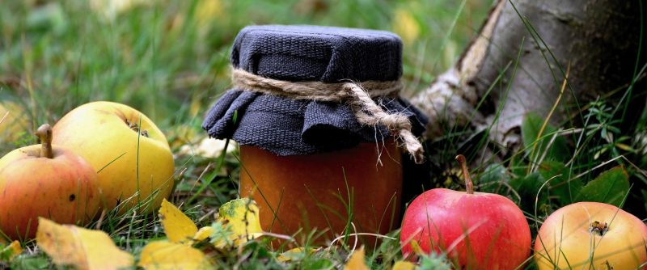

Welcome to the orchard!
The crisp autumn air is here, and harvest season is in full swing. Stop by to pick your own Honeycrisp and McIntosh apples, wander through the pumpkin patch, or visit our farm bakery for fresh warm treats.
Cider Press Tours
Every weekend we run live pressing demonstrations. Check out this video tour of traditional cider pressing to see how our sweet apple cider is made